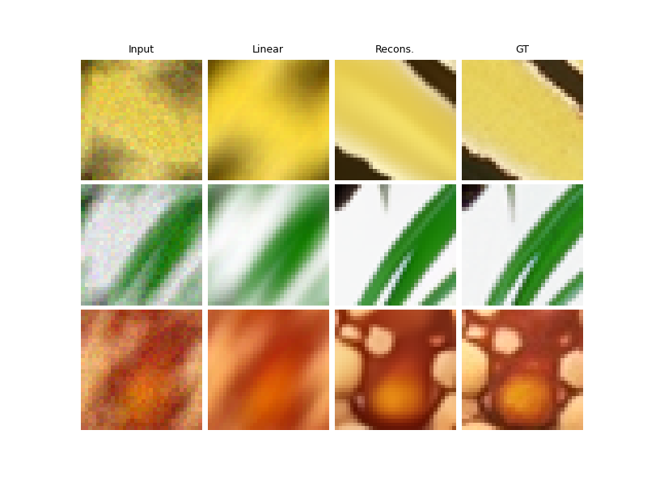
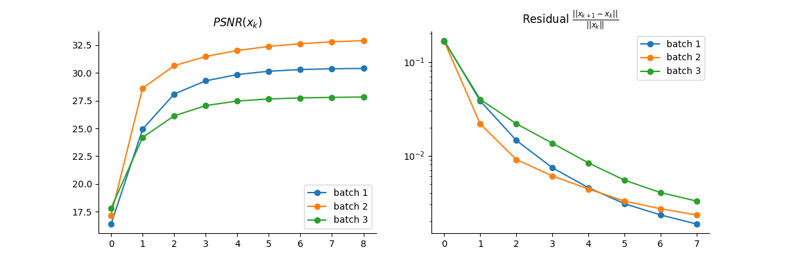

Note
Go to the end to download the full example code
DPIR method for PnP image deblurring.
This example shows how to use the DPIR method to solve a PnP image deblurring problem. The DPIR method is described in the following paper: Zhang, K., Zuo, W., Gu, S., & Zhang, L. (2017). Learning deep CNN denoiser prior for image restoration. In Proceedings of the IEEE conference on computer vision and pattern recognition (pp. 3929-3938).
import deepinv as dinv
from pathlib import Path
import torch
from torch.utils.data import DataLoader
from deepinv.models import DRUNet
from deepinv.optim.data_fidelity import L2
from deepinv.optim.prior import PnP
from deepinv.optim.optimizers import optim_builder
from deepinv.training_utils import test
from torchvision import transforms
from deepinv.utils.parameters import get_DPIR_params
from deepinv.utils.demo import load_dataset, load_degradation
Setup paths for data loading and results.
BASE_DIR = Path(".")
ORIGINAL_DATA_DIR = BASE_DIR / "datasets"
DATA_DIR = BASE_DIR / "measurements"
RESULTS_DIR = BASE_DIR / "results"
DEG_DIR = BASE_DIR / "degradations"
Load base image datasets and degradation operators.
In this example, we use the Set3C dataset and a motion blur kernel from Levin et al. (2009).
# Set the global random seed from pytorch to ensure reproducibility of the example.
torch.manual_seed(0)
device = dinv.utils.get_freer_gpu() if torch.cuda.is_available() else "cpu"
# Set up the variable to fetch dataset and operators.
method = "DPIR"
dataset_name = "set3c"
img_size = 256 if torch.cuda.is_available() else 32
val_transform = transforms.Compose(
[transforms.CenterCrop(img_size), transforms.ToTensor()]
)
# Generate a motion blur operator.
kernel_index = 1 # which kernel to chose among the 8 motion kernels from 'Levin09.mat'
kernel_torch = load_degradation(
"Levin09.npy", DEG_DIR / "kernels", kernel_index=kernel_index
)
kernel_torch = kernel_torch.unsqueeze(0).unsqueeze(
0
) # add batch and channel dimensions
dataset = load_dataset(dataset_name, ORIGINAL_DATA_DIR, transform=val_transform)
Levin09.npy degradation downloaded in degradations/kernels
Downloading datasets/set3c.zip
0%| | 0.00/385k [00:00<?, ?iB/s]
19%|█▉ | 72.7k/385k [00:00<00:00, 721kiB/s]
40%|████ | 155k/385k [00:00<00:00, 773kiB/s]
100%|██████████| 385k/385k [00:00<00:00, 1.30MiB/s]
set3c dataset downloaded in datasets
Generate a dataset of blurred images and load it.
We use the BlurFFT class from the physics module to generate a dataset of blurred images.
noise_level_img = 0.03 # Gaussian Noise standard deviation for the degradation
n_channels = 3 # 3 for color images, 1 for gray-scale images
p = dinv.physics.BlurFFT(
img_size=(n_channels, img_size, img_size),
filter=kernel_torch,
device=device,
noise_model=dinv.physics.GaussianNoise(sigma=noise_level_img),
)
# Use parallel dataloader if using a GPU to fasten training,
# otherwise, as all computes are on CPU, use synchronous data loading.
num_workers = 4 if torch.cuda.is_available() else 0
n_images_max = 3 # Maximal number of images to restore from the input dataset
# Generate a dataset in a HDF5 folder in "{dir}/dinv_dataset0.h5'" and load it.
operation = "deblur"
measurement_dir = DATA_DIR / dataset_name / operation
dinv_dataset_path = dinv.datasets.generate_dataset(
train_dataset=dataset,
test_dataset=None,
physics=p,
device=device,
save_dir=measurement_dir,
train_datapoints=n_images_max,
num_workers=num_workers,
)
batch_size = 3 # batch size for testing. As the number of iterations is fixed, we can use batch_size > 1
# and restore multiple images in parallel.
dataset = dinv.datasets.HDF5Dataset(path=dinv_dataset_path, train=True)
Computing train measurement vectors from base dataset...
0%| | 0/2 [00:00<?, ?it/s]
100%|██████████| 2/2 [00:00<00:00, 100.60it/s]
Dataset has been saved in measurements/set3c/deblur
Set up the DPIR algorithm to solve the inverse problem.
This method is based on half-quadratic splitting (HQS).
The algorithm alternates between a denoising step and a data fidelity step, where
the denoising step is performed by a pretrained denoiser deepinv.models.DRUNet.
# load specific parameters for DPIR
lamb, sigma_denoiser, stepsize, max_iter = get_DPIR_params(noise_level_img)
params_algo = {"stepsize": stepsize, "g_param": sigma_denoiser, "lambda": lamb}
early_stop = False # Do not stop algorithm with convergence criteria
# Select the data fidelity term
data_fidelity = L2()
# Specify the denoising prior
prior = PnP(denoiser=DRUNet(pretrained="download", train=False, device=device))
# instantiate the algorithm class to solve the IP problem.
model = optim_builder(
iteration="HQS",
prior=prior,
data_fidelity=data_fidelity,
early_stop=early_stop,
max_iter=max_iter,
verbose=True,
params_algo=params_algo,
)
Downloading: "https://mycore.core-cloud.net/index.php/s/9EzDqcJxQUJKYul/download?path=%2Fweights&files=drunet_color.pth" to /home/runner/.cache/torch/hub/checkpoints/drunet_color.pth
0%| | 0.00/125M [00:00<?, ?B/s]
0%| | 120k/125M [00:00<01:59, 1.09MB/s]
0%| | 296k/125M [00:00<01:53, 1.14MB/s]
1%| | 728k/125M [00:00<00:59, 2.19MB/s]
1%| | 1.02M/125M [00:00<00:58, 2.23MB/s]
1%| | 1.39M/125M [00:00<00:47, 2.70MB/s]
1%|▏ | 1.68M/125M [00:00<00:47, 2.70MB/s]
2%|▏ | 1.99M/125M [00:00<00:50, 2.55MB/s]
2%|▏ | 2.33M/125M [00:00<00:45, 2.80MB/s]
2%|▏ | 2.65M/125M [00:01<00:44, 2.86MB/s]
2%|▏ | 2.96M/125M [00:01<00:47, 2.67MB/s]
3%|▎ | 3.30M/125M [00:01<00:44, 2.87MB/s]
3%|▎ | 3.62M/125M [00:01<00:43, 2.92MB/s]
3%|▎ | 3.93M/125M [00:01<00:46, 2.70MB/s]
3%|▎ | 4.27M/125M [00:01<00:43, 2.89MB/s]
4%|▎ | 4.59M/125M [00:01<00:42, 2.93MB/s]
4%|▍ | 4.90M/125M [00:01<00:46, 2.72MB/s]
4%|▍ | 5.23M/125M [00:02<00:43, 2.90MB/s]
4%|▍ | 5.55M/125M [00:02<00:42, 2.94MB/s]
5%|▍ | 5.87M/125M [00:02<00:45, 2.73MB/s]
5%|▍ | 6.20M/125M [00:02<00:42, 2.91MB/s]
5%|▌ | 6.52M/125M [00:02<00:42, 2.94MB/s]
5%|▌ | 6.83M/125M [00:02<00:41, 3.01MB/s]
6%|▌ | 7.12M/125M [00:02<00:44, 2.76MB/s]
6%|▌ | 7.45M/125M [00:02<00:41, 2.94MB/s]
6%|▌ | 7.74M/125M [00:02<00:42, 2.89MB/s]
6%|▋ | 8.05M/125M [00:03<00:45, 2.68MB/s]
7%|▋ | 8.36M/125M [00:03<00:43, 2.83MB/s]
7%|▋ | 8.70M/125M [00:03<00:40, 3.01MB/s]
7%|▋ | 8.99M/125M [00:03<00:41, 2.94MB/s]
7%|▋ | 9.28M/125M [00:03<00:44, 2.69MB/s]
8%|▊ | 9.61M/125M [00:03<00:41, 2.89MB/s]
8%|▊ | 9.91M/125M [00:03<00:41, 2.90MB/s]
8%|▊ | 10.2M/125M [00:03<00:41, 2.91MB/s]
8%|▊ | 10.5M/125M [00:04<00:44, 2.68MB/s]
9%|▊ | 10.8M/125M [00:04<00:40, 2.93MB/s]
9%|▉ | 11.1M/125M [00:04<00:40, 2.91MB/s]
9%|▉ | 11.4M/125M [00:04<00:40, 2.91MB/s]
9%|▉ | 11.7M/125M [00:04<00:44, 2.68MB/s]
10%|▉ | 12.1M/125M [00:04<00:39, 2.96MB/s]
10%|▉ | 12.3M/125M [00:04<00:40, 2.92MB/s]
10%|█ | 12.6M/125M [00:04<00:40, 2.92MB/s]
10%|█ | 12.9M/125M [00:04<00:43, 2.69MB/s]
11%|█ | 13.3M/125M [00:05<00:39, 2.97MB/s]
11%|█ | 13.6M/125M [00:05<00:39, 2.92MB/s]
11%|█ | 13.9M/125M [00:05<00:43, 2.67MB/s]
11%|█▏ | 14.2M/125M [00:05<00:39, 2.91MB/s]
12%|█▏ | 14.5M/125M [00:05<00:40, 2.87MB/s]
12%|█▏ | 14.8M/125M [00:05<00:39, 2.94MB/s]
12%|█▏ | 15.1M/125M [00:05<00:41, 2.73MB/s]
12%|█▏ | 15.4M/125M [00:05<00:39, 2.87MB/s]
13%|█▎ | 15.7M/125M [00:05<00:39, 2.87MB/s]
13%|█▎ | 16.0M/125M [00:06<00:38, 2.95MB/s]
13%|█▎ | 16.3M/125M [00:06<00:41, 2.74MB/s]
13%|█▎ | 16.6M/125M [00:06<00:39, 2.88MB/s]
14%|█▎ | 16.9M/125M [00:06<00:39, 2.87MB/s]
14%|█▍ | 17.2M/125M [00:06<00:38, 2.95MB/s]
14%|█▍ | 17.5M/125M [00:06<00:41, 2.73MB/s]
14%|█▍ | 17.9M/125M [00:06<00:38, 2.90MB/s]
15%|█▍ | 18.1M/125M [00:06<00:39, 2.86MB/s]
15%|█▍ | 18.5M/125M [00:06<00:37, 2.94MB/s]
15%|█▌ | 18.7M/125M [00:07<00:40, 2.73MB/s]
15%|█▌ | 19.1M/125M [00:07<00:38, 2.88MB/s]
16%|█▌ | 19.4M/125M [00:07<00:38, 2.87MB/s]
16%|█▌ | 19.7M/125M [00:07<00:37, 2.94MB/s]
16%|█▌ | 20.0M/125M [00:07<00:40, 2.69MB/s]
16%|█▋ | 20.3M/125M [00:07<00:36, 2.98MB/s]
17%|█▋ | 20.6M/125M [00:07<00:37, 2.94MB/s]
17%|█▋ | 20.9M/125M [00:07<00:41, 2.65MB/s]
17%|█▋ | 21.3M/125M [00:07<00:36, 2.93MB/s]
17%|█▋ | 21.5M/125M [00:08<00:37, 2.89MB/s]
18%|█▊ | 21.8M/125M [00:08<00:36, 2.93MB/s]
18%|█▊ | 22.1M/125M [00:08<00:39, 2.70MB/s]
18%|█▊ | 22.5M/125M [00:08<00:36, 2.97MB/s]
18%|█▊ | 22.8M/125M [00:08<00:36, 2.94MB/s]
19%|█▊ | 23.1M/125M [00:08<00:40, 2.64MB/s]
19%|█▉ | 23.5M/125M [00:08<00:35, 2.98MB/s]
19%|█▉ | 23.8M/125M [00:08<00:36, 2.90MB/s]
19%|█▉ | 24.0M/125M [00:08<00:39, 2.66MB/s]
20%|█▉ | 24.4M/125M [00:09<00:35, 2.99MB/s]
20%|█▉ | 24.7M/125M [00:09<00:35, 2.91MB/s]
20%|██ | 25.0M/125M [00:09<00:39, 2.65MB/s]
20%|██ | 25.3M/125M [00:09<00:37, 2.81MB/s]
21%|██ | 25.7M/125M [00:09<00:35, 2.92MB/s]
21%|██ | 26.0M/125M [00:09<00:35, 2.95MB/s]
21%|██ | 26.2M/125M [00:09<00:37, 2.72MB/s]
21%|██▏ | 26.6M/125M [00:09<00:35, 2.93MB/s]
22%|██▏ | 26.9M/125M [00:10<00:35, 2.87MB/s]
22%|██▏ | 27.2M/125M [00:10<00:38, 2.67MB/s]
22%|██▏ | 27.5M/125M [00:10<00:35, 2.85MB/s]
22%|██▏ | 27.8M/125M [00:10<00:34, 2.95MB/s]
23%|██▎ | 28.1M/125M [00:10<00:33, 2.97MB/s]
23%|██▎ | 28.4M/125M [00:10<00:36, 2.75MB/s]
23%|██▎ | 28.7M/125M [00:10<00:35, 2.87MB/s]
23%|██▎ | 29.0M/125M [00:10<00:34, 2.91MB/s]
24%|██▎ | 29.3M/125M [00:10<00:34, 2.92MB/s]
24%|██▍ | 29.6M/125M [00:11<00:36, 2.70MB/s]
24%|██▍ | 30.0M/125M [00:11<00:34, 2.90MB/s]
24%|██▍ | 30.2M/125M [00:11<00:33, 2.93MB/s]
25%|██▍ | 30.5M/125M [00:11<00:34, 2.88MB/s]
25%|██▍ | 30.8M/125M [00:11<00:36, 2.66MB/s]
25%|██▌ | 31.1M/125M [00:11<00:34, 2.84MB/s]
25%|██▌ | 31.4M/125M [00:11<00:33, 2.95MB/s]
25%|██▌ | 31.7M/125M [00:11<00:33, 2.90MB/s]
26%|██▌ | 32.0M/125M [00:11<00:36, 2.68MB/s]
26%|██▌ | 32.3M/125M [00:12<00:33, 2.86MB/s]
26%|██▌ | 32.7M/125M [00:12<00:32, 2.96MB/s]
26%|██▋ | 32.9M/125M [00:12<00:32, 2.91MB/s]
27%|██▋ | 33.2M/125M [00:12<00:35, 2.68MB/s]
27%|██▋ | 33.6M/125M [00:12<00:33, 2.86MB/s]
27%|██▋ | 33.9M/125M [00:12<00:32, 2.95MB/s]
27%|██▋ | 34.1M/125M [00:12<00:32, 2.89MB/s]
28%|██▊ | 34.4M/125M [00:12<00:35, 2.70MB/s]
28%|██▊ | 34.8M/125M [00:12<00:32, 2.89MB/s]
28%|██▊ | 35.1M/125M [00:13<00:31, 2.96MB/s]
28%|██▊ | 35.4M/125M [00:13<00:32, 2.90MB/s]
29%|██▊ | 35.7M/125M [00:13<00:34, 2.69MB/s]
29%|██▉ | 36.0M/125M [00:13<00:32, 2.87MB/s]
29%|██▉ | 36.3M/125M [00:13<00:31, 2.96MB/s]
29%|██▉ | 36.6M/125M [00:13<00:31, 2.90MB/s]
30%|██▉ | 36.9M/125M [00:13<00:34, 2.69MB/s]
30%|██▉ | 37.2M/125M [00:13<00:31, 2.88MB/s]
30%|███ | 37.5M/125M [00:13<00:30, 2.96MB/s]
30%|███ | 37.8M/125M [00:14<00:31, 2.91MB/s]
31%|███ | 38.1M/125M [00:14<00:33, 2.69MB/s]
31%|███ | 38.4M/125M [00:14<00:31, 2.88MB/s]
31%|███ | 38.7M/125M [00:14<00:30, 2.93MB/s]
31%|███▏ | 39.0M/125M [00:14<00:30, 2.91MB/s]
32%|███▏ | 39.3M/125M [00:14<00:33, 2.69MB/s]
32%|███▏ | 39.6M/125M [00:14<00:30, 2.88MB/s]
32%|███▏ | 39.9M/125M [00:14<00:30, 2.92MB/s]
32%|███▏ | 40.2M/125M [00:14<00:30, 2.92MB/s]
33%|███▎ | 40.5M/125M [00:15<00:32, 2.70MB/s]
33%|███▎ | 40.8M/125M [00:15<00:30, 2.89MB/s]
33%|███▎ | 41.1M/125M [00:15<00:29, 2.93MB/s]
33%|███▎ | 41.4M/125M [00:15<00:29, 2.92MB/s]
33%|███▎ | 41.7M/125M [00:15<00:32, 2.70MB/s]
34%|███▍ | 42.0M/125M [00:15<00:29, 2.89MB/s]
34%|███▍ | 42.3M/125M [00:15<00:29, 2.97MB/s]
34%|███▍ | 42.6M/125M [00:15<00:29, 2.90MB/s]
34%|███▍ | 42.9M/125M [00:15<00:31, 2.68MB/s]
35%|███▍ | 43.3M/125M [00:16<00:29, 2.88MB/s]
35%|███▍ | 43.6M/125M [00:16<00:28, 2.93MB/s]
35%|███▌ | 43.9M/125M [00:16<00:28, 2.94MB/s]
35%|███▌ | 44.1M/125M [00:16<00:31, 2.70MB/s]
36%|███▌ | 44.5M/125M [00:16<00:29, 2.88MB/s]
36%|███▌ | 44.8M/125M [00:16<00:28, 2.93MB/s]
36%|███▌ | 45.1M/125M [00:16<00:28, 2.94MB/s]
36%|███▋ | 45.4M/125M [00:16<00:30, 2.70MB/s]
37%|███▋ | 45.7M/125M [00:16<00:28, 2.88MB/s]
37%|███▋ | 46.0M/125M [00:17<00:28, 2.93MB/s]
37%|███▋ | 46.3M/125M [00:17<00:28, 2.92MB/s]
37%|███▋ | 46.6M/125M [00:17<00:30, 2.70MB/s]
38%|███▊ | 46.9M/125M [00:17<00:28, 2.88MB/s]
38%|███▊ | 47.2M/125M [00:17<00:27, 2.93MB/s]
38%|███▊ | 47.5M/125M [00:17<00:27, 2.93MB/s]
38%|███▊ | 47.8M/125M [00:17<00:29, 2.70MB/s]
39%|███▊ | 48.1M/125M [00:17<00:27, 2.88MB/s]
39%|███▉ | 48.4M/125M [00:17<00:27, 2.93MB/s]
39%|███▉ | 48.7M/125M [00:18<00:27, 2.93MB/s]
39%|███▉ | 49.0M/125M [00:18<00:29, 2.70MB/s]
40%|███▉ | 49.3M/125M [00:18<00:27, 2.88MB/s]
40%|███▉ | 49.6M/125M [00:18<00:26, 2.93MB/s]
40%|████ | 49.9M/125M [00:18<00:26, 2.91MB/s]
40%|████ | 50.2M/125M [00:18<00:29, 2.67MB/s]
41%|████ | 50.5M/125M [00:18<00:26, 2.88MB/s]
41%|████ | 50.8M/125M [00:18<00:26, 2.95MB/s]
41%|████ | 51.1M/125M [00:18<00:26, 2.92MB/s]
41%|████▏ | 51.4M/125M [00:19<00:28, 2.67MB/s]
42%|████▏ | 51.7M/125M [00:19<00:26, 2.91MB/s]
42%|████▏ | 52.0M/125M [00:19<00:25, 2.95MB/s]
42%|████▏ | 52.3M/125M [00:19<00:26, 2.91MB/s]
42%|████▏ | 52.6M/125M [00:19<00:28, 2.67MB/s]
43%|████▎ | 52.9M/125M [00:19<00:26, 2.85MB/s]
43%|████▎ | 53.2M/125M [00:19<00:25, 2.96MB/s]
43%|████▎ | 53.5M/125M [00:19<00:25, 2.91MB/s]
43%|████▎ | 53.8M/125M [00:19<00:27, 2.69MB/s]
43%|████▎ | 54.1M/125M [00:20<00:25, 2.86MB/s]
44%|████▎ | 54.5M/125M [00:20<00:24, 2.97MB/s]
44%|████▍ | 54.8M/125M [00:20<00:25, 2.89MB/s]
44%|████▍ | 55.0M/125M [00:20<00:27, 2.69MB/s]
44%|████▍ | 55.4M/125M [00:20<00:25, 2.87MB/s]
45%|████▍ | 55.7M/125M [00:20<00:24, 2.97MB/s]
45%|████▍ | 56.0M/125M [00:20<00:24, 2.90MB/s]
45%|████▌ | 56.2M/125M [00:20<00:26, 2.69MB/s]
45%|████▌ | 56.6M/125M [00:20<00:24, 2.87MB/s]
46%|████▌ | 56.9M/125M [00:21<00:23, 2.98MB/s]
46%|████▌ | 57.2M/125M [00:21<00:24, 2.90MB/s]
46%|████▌ | 57.5M/125M [00:21<00:26, 2.68MB/s]
46%|████▋ | 57.8M/125M [00:21<00:24, 2.88MB/s]
47%|████▋ | 58.1M/125M [00:21<00:23, 2.98MB/s]
47%|████▋ | 58.4M/125M [00:21<00:23, 2.90MB/s]
47%|████▋ | 58.7M/125M [00:21<00:25, 2.68MB/s]
47%|████▋ | 59.0M/125M [00:21<00:23, 2.88MB/s]
48%|████▊ | 59.3M/125M [00:21<00:22, 2.99MB/s]
48%|████▊ | 59.6M/125M [00:22<00:23, 2.92MB/s]
48%|████▊ | 59.9M/125M [00:22<00:25, 2.71MB/s]
48%|████▊ | 60.2M/125M [00:22<00:23, 2.91MB/s]
49%|████▊ | 60.5M/125M [00:22<00:22, 2.92MB/s]
49%|████▉ | 60.8M/125M [00:22<00:22, 2.92MB/s]
49%|████▉ | 61.1M/125M [00:22<00:24, 2.71MB/s]
49%|████▉ | 61.4M/125M [00:22<00:22, 2.90MB/s]
50%|████▉ | 61.7M/125M [00:22<00:22, 2.92MB/s]
50%|████▉ | 62.0M/125M [00:22<00:22, 2.93MB/s]
50%|█████ | 62.3M/125M [00:23<00:24, 2.71MB/s]
50%|█████ | 62.6M/125M [00:23<00:22, 2.90MB/s]
51%|█████ | 63.0M/125M [00:23<00:22, 2.92MB/s]
51%|█████ | 63.2M/125M [00:23<00:21, 2.92MB/s]
51%|█████ | 63.5M/125M [00:23<00:23, 2.70MB/s]
51%|█████▏ | 63.9M/125M [00:23<00:21, 2.95MB/s]
52%|█████▏ | 64.2M/125M [00:23<00:21, 2.90MB/s]
52%|█████▏ | 64.4M/125M [00:23<00:21, 2.89MB/s]
52%|█████▏ | 64.7M/125M [00:23<00:23, 2.67MB/s]
52%|█████▏ | 65.1M/125M [00:24<00:21, 2.91MB/s]
52%|█████▏ | 65.4M/125M [00:24<00:21, 2.92MB/s]
53%|█████▎ | 65.7M/125M [00:24<00:21, 2.93MB/s]
53%|█████▎ | 66.0M/125M [00:24<00:22, 2.70MB/s]
53%|█████▎ | 66.3M/125M [00:24<00:20, 2.96MB/s]
53%|█████▎ | 66.6M/125M [00:24<00:20, 2.92MB/s]
54%|█████▎ | 66.9M/125M [00:24<00:20, 2.93MB/s]
54%|█████▍ | 67.2M/125M [00:24<00:22, 2.70MB/s]
54%|█████▍ | 67.5M/125M [00:24<00:20, 2.94MB/s]
54%|█████▍ | 67.8M/125M [00:25<00:20, 2.91MB/s]
55%|█████▍ | 68.1M/125M [00:25<00:20, 2.90MB/s]
55%|█████▍ | 68.4M/125M [00:25<00:21, 2.69MB/s]
55%|█████▌ | 68.7M/125M [00:25<00:19, 2.93MB/s]
55%|█████▌ | 69.0M/125M [00:25<00:20, 2.90MB/s]
56%|█████▌ | 69.3M/125M [00:25<00:20, 2.87MB/s]
56%|█████▌ | 69.6M/125M [00:25<00:21, 2.67MB/s]
56%|█████▌ | 69.9M/125M [00:25<00:19, 2.91MB/s]
56%|█████▋ | 70.2M/125M [00:25<00:19, 2.93MB/s]
57%|█████▋ | 70.5M/125M [00:26<00:19, 2.92MB/s]
57%|█████▋ | 70.8M/125M [00:26<00:20, 2.69MB/s]
57%|█████▋ | 71.1M/125M [00:26<00:19, 2.87MB/s]
57%|█████▋ | 71.4M/125M [00:26<00:18, 2.94MB/s]
58%|█████▊ | 71.7M/125M [00:26<00:18, 2.92MB/s]
58%|█████▊ | 72.0M/125M [00:26<00:20, 2.68MB/s]
58%|█████▊ | 72.3M/125M [00:26<00:19, 2.84MB/s]
58%|█████▊ | 72.6M/125M [00:26<00:18, 2.95MB/s]
59%|█████▊ | 72.9M/125M [00:26<00:18, 2.94MB/s]
59%|█████▉ | 73.2M/125M [00:27<00:19, 2.70MB/s]
59%|█████▉ | 73.5M/125M [00:27<00:18, 2.86MB/s]
59%|█████▉ | 73.9M/125M [00:27<00:18, 2.95MB/s]
60%|█████▉ | 74.1M/125M [00:27<00:18, 2.91MB/s]
60%|█████▉ | 74.4M/125M [00:27<00:19, 2.69MB/s]
60%|██████ | 74.8M/125M [00:27<00:18, 2.87MB/s]
60%|██████ | 75.1M/125M [00:27<00:17, 2.95MB/s]
61%|██████ | 75.4M/125M [00:27<00:17, 2.92MB/s]
61%|██████ | 75.6M/125M [00:27<00:19, 2.69MB/s]
61%|██████ | 75.9M/125M [00:28<00:17, 2.84MB/s]
61%|██████ | 76.3M/125M [00:28<00:17, 2.96MB/s]
61%|██████▏ | 76.6M/125M [00:28<00:17, 2.93MB/s]
62%|██████▏ | 76.9M/125M [00:28<00:18, 2.70MB/s]
62%|██████▏ | 77.2M/125M [00:28<00:17, 2.87MB/s]
62%|██████▏ | 77.5M/125M [00:28<00:16, 2.94MB/s]
62%|██████▏ | 77.8M/125M [00:28<00:16, 2.92MB/s]
63%|██████▎ | 78.1M/125M [00:28<00:18, 2.70MB/s]
63%|██████▎ | 78.4M/125M [00:28<00:16, 2.92MB/s]
63%|██████▎ | 78.7M/125M [00:29<00:16, 2.93MB/s]
63%|██████▎ | 79.0M/125M [00:29<00:16, 2.91MB/s]
64%|██████▎ | 79.3M/125M [00:29<00:17, 2.68MB/s]
64%|██████▍ | 79.5M/125M [00:29<00:17, 2.70MB/s]
64%|██████▍ | 79.8M/125M [00:29<00:16, 2.85MB/s]
64%|██████▍ | 80.2M/125M [00:29<00:15, 2.97MB/s]
65%|██████▍ | 80.5M/125M [00:29<00:16, 2.74MB/s]
65%|██████▍ | 80.7M/125M [00:29<00:16, 2.74MB/s]
65%|██████▌ | 81.0M/125M [00:29<00:15, 2.85MB/s]
65%|██████▌ | 81.4M/125M [00:30<00:14, 3.03MB/s]
66%|██████▌ | 81.7M/125M [00:30<00:16, 2.74MB/s]
66%|██████▌ | 81.9M/125M [00:30<00:16, 2.76MB/s]
66%|██████▌ | 82.2M/125M [00:30<00:15, 2.87MB/s]
66%|██████▋ | 82.6M/125M [00:30<00:14, 3.04MB/s]
67%|██████▋ | 82.9M/125M [00:30<00:15, 2.75MB/s]
67%|██████▋ | 83.2M/125M [00:30<00:15, 2.77MB/s]
67%|██████▋ | 83.5M/125M [00:30<00:14, 2.87MB/s]
67%|██████▋ | 83.8M/125M [00:30<00:14, 3.04MB/s]
68%|██████▊ | 84.1M/125M [00:31<00:15, 2.75MB/s]
68%|██████▊ | 84.4M/125M [00:31<00:15, 2.77MB/s]
68%|██████▊ | 84.7M/125M [00:31<00:14, 2.87MB/s]
68%|██████▊ | 85.0M/125M [00:31<00:13, 3.04MB/s]
69%|██████▊ | 85.3M/125M [00:31<00:14, 2.76MB/s]
69%|██████▊ | 85.6M/125M [00:31<00:14, 2.76MB/s]
69%|██████▉ | 85.9M/125M [00:31<00:14, 2.87MB/s]
69%|██████▉ | 86.2M/125M [00:31<00:13, 3.05MB/s]
69%|██████▉ | 86.5M/125M [00:31<00:14, 2.76MB/s]
70%|██████▉ | 86.8M/125M [00:32<00:14, 2.77MB/s]
70%|██████▉ | 87.1M/125M [00:32<00:13, 2.86MB/s]
70%|███████ | 87.4M/125M [00:32<00:12, 3.07MB/s]
70%|███████ | 87.7M/125M [00:32<00:13, 2.78MB/s]
71%|███████ | 88.0M/125M [00:32<00:13, 2.77MB/s]
71%|███████ | 88.3M/125M [00:32<00:13, 2.85MB/s]
71%|███████ | 88.7M/125M [00:32<00:12, 3.03MB/s]
71%|███████▏ | 89.0M/125M [00:32<00:13, 2.80MB/s]
72%|███████▏ | 89.2M/125M [00:32<00:13, 2.78MB/s]
72%|███████▏ | 89.5M/125M [00:33<00:12, 2.85MB/s]
72%|███████▏ | 89.8M/125M [00:33<00:12, 2.99MB/s]
72%|███████▏ | 90.1M/125M [00:33<00:13, 2.76MB/s]
73%|███████▎ | 90.4M/125M [00:33<00:12, 2.77MB/s]
73%|███████▎ | 90.7M/125M [00:33<00:12, 2.87MB/s]
73%|███████▎ | 91.0M/125M [00:33<00:11, 2.99MB/s]
73%|███████▎ | 91.3M/125M [00:33<00:11, 3.05MB/s]
74%|███████▎ | 91.6M/125M [00:33<00:12, 2.73MB/s]
74%|███████▍ | 91.9M/125M [00:33<00:12, 2.82MB/s]
74%|███████▍ | 92.2M/125M [00:34<00:11, 2.90MB/s]
74%|███████▍ | 92.6M/125M [00:34<00:11, 3.03MB/s]
75%|███████▍ | 92.9M/125M [00:34<00:12, 2.72MB/s]
75%|███████▍ | 93.1M/125M [00:34<00:11, 2.82MB/s]
75%|███████▌ | 93.4M/125M [00:34<00:11, 2.84MB/s]
75%|███████▌ | 93.7M/125M [00:34<00:10, 2.96MB/s]
76%|███████▌ | 94.0M/125M [00:34<00:11, 2.76MB/s]
76%|███████▌ | 94.3M/125M [00:34<00:11, 2.76MB/s]
76%|███████▌ | 94.6M/125M [00:34<00:10, 2.85MB/s]
76%|███████▌ | 94.9M/125M [00:35<00:10, 2.87MB/s]
76%|███████▋ | 95.2M/125M [00:35<00:10, 2.95MB/s]
77%|███████▋ | 95.5M/125M [00:35<00:11, 2.74MB/s]
77%|███████▋ | 95.8M/125M [00:35<00:10, 2.76MB/s]
77%|███████▋ | 96.0M/125M [00:35<00:10, 2.83MB/s]
77%|███████▋ | 96.3M/125M [00:35<00:10, 2.90MB/s]
78%|███████▊ | 96.6M/125M [00:35<00:10, 2.92MB/s]
78%|███████▊ | 96.9M/125M [00:35<00:10, 2.78MB/s]
78%|███████▊ | 97.2M/125M [00:35<00:10, 2.77MB/s]
78%|███████▊ | 97.5M/125M [00:35<00:09, 2.86MB/s]
79%|███████▊ | 97.8M/125M [00:36<00:09, 2.85MB/s]
79%|███████▉ | 98.1M/125M [00:36<00:09, 2.90MB/s]
79%|███████▉ | 98.4M/125M [00:36<00:09, 2.95MB/s]
79%|███████▉ | 98.7M/125M [00:36<00:09, 2.75MB/s]
79%|███████▉ | 99.0M/125M [00:36<00:09, 2.85MB/s]
80%|███████▉ | 99.2M/125M [00:36<00:09, 2.81MB/s]
80%|███████▉ | 99.5M/125M [00:36<00:09, 2.86MB/s]
80%|████████ | 99.8M/125M [00:36<00:09, 2.87MB/s]
80%|████████ | 100M/125M [00:36<00:09, 2.81MB/s]
81%|████████ | 100M/125M [00:37<00:09, 2.78MB/s]
81%|████████ | 101M/125M [00:37<00:08, 2.86MB/s]
81%|████████ | 101M/125M [00:37<00:08, 2.83MB/s]
81%|████████▏ | 101M/125M [00:37<00:08, 2.91MB/s]
82%|████████▏ | 102M/125M [00:37<00:08, 2.81MB/s]
82%|████████▏ | 102M/125M [00:37<00:08, 2.82MB/s]
82%|████████▏ | 102M/125M [00:37<00:08, 2.82MB/s]
82%|████████▏ | 102M/125M [00:37<00:08, 2.86MB/s]
82%|████████▏ | 103M/125M [00:37<00:08, 2.84MB/s]
83%|████████▎ | 103M/125M [00:37<00:07, 2.88MB/s]
83%|████████▎ | 103M/125M [00:38<00:07, 2.84MB/s]
83%|████████▎ | 104M/125M [00:38<00:07, 2.84MB/s]
83%|████████▎ | 104M/125M [00:38<00:07, 2.84MB/s]
84%|████████▎ | 104M/125M [00:38<00:07, 2.85MB/s]
84%|████████▍ | 104M/125M [00:38<00:07, 2.83MB/s]
84%|████████▍ | 105M/125M [00:38<00:07, 2.89MB/s]
84%|████████▍ | 105M/125M [00:38<00:07, 2.85MB/s]
84%|████████▍ | 105M/125M [00:38<00:07, 2.85MB/s]
85%|████████▍ | 105M/125M [00:38<00:07, 2.78MB/s]
85%|████████▍ | 106M/125M [00:39<00:06, 2.88MB/s]
85%|████████▌ | 106M/125M [00:39<00:06, 2.92MB/s]
85%|████████▌ | 106M/125M [00:39<00:06, 2.91MB/s]
86%|████████▌ | 107M/125M [00:39<00:06, 2.85MB/s]
86%|████████▌ | 107M/125M [00:39<00:06, 2.83MB/s]
86%|████████▌ | 107M/125M [00:39<00:06, 2.79MB/s]
86%|████████▋ | 107M/125M [00:39<00:06, 2.86MB/s]
87%|████████▋ | 108M/125M [00:39<00:06, 2.91MB/s]
87%|████████▋ | 108M/125M [00:39<00:05, 2.90MB/s]
87%|████████▋ | 108M/125M [00:39<00:05, 2.84MB/s]
87%|████████▋ | 109M/125M [00:40<00:05, 2.82MB/s]
87%|████████▋ | 109M/125M [00:40<00:05, 2.79MB/s]
88%|████████▊ | 109M/125M [00:40<00:05, 2.87MB/s]
88%|████████▊ | 109M/125M [00:40<00:05, 2.91MB/s]
88%|████████▊ | 110M/125M [00:40<00:05, 2.90MB/s]
88%|████████▊ | 110M/125M [00:40<00:05, 2.83MB/s]
89%|████████▊ | 110M/125M [00:40<00:05, 2.82MB/s]
89%|████████▉ | 111M/125M [00:40<00:05, 2.79MB/s]
89%|████████▉ | 111M/125M [00:40<00:05, 2.83MB/s]
89%|████████▉ | 111M/125M [00:40<00:04, 2.92MB/s]
90%|████████▉ | 111M/125M [00:41<00:04, 2.85MB/s]
90%|████████▉ | 112M/125M [00:41<00:04, 2.84MB/s]
90%|████████▉ | 112M/125M [00:41<00:04, 2.79MB/s]
90%|█████████ | 112M/125M [00:41<00:04, 2.85MB/s]
90%|█████████ | 113M/125M [00:41<00:04, 2.93MB/s]
91%|█████████ | 113M/125M [00:41<00:04, 2.86MB/s]
91%|█████████ | 113M/125M [00:41<00:04, 2.84MB/s]
91%|█████████ | 113M/125M [00:41<00:04, 2.80MB/s]
91%|█████████▏| 114M/125M [00:41<00:03, 2.89MB/s]
92%|█████████▏| 114M/125M [00:42<00:03, 2.87MB/s]
92%|█████████▏| 114M/125M [00:42<00:03, 2.93MB/s]
92%|█████████▏| 115M/125M [00:42<00:03, 2.84MB/s]
92%|█████████▏| 115M/125M [00:42<00:03, 2.84MB/s]
92%|█████████▏| 115M/125M [00:42<00:03, 2.80MB/s]
93%|█████████▎| 115M/125M [00:42<00:03, 2.84MB/s]
93%|█████████▎| 116M/125M [00:42<00:03, 2.92MB/s]
93%|█████████▎| 116M/125M [00:42<00:03, 2.84MB/s]
93%|█████████▎| 116M/125M [00:42<00:03, 2.85MB/s]
94%|█████████▎| 117M/125M [00:43<00:02, 2.83MB/s]
94%|█████████▍| 117M/125M [00:43<00:02, 2.89MB/s]
94%|█████████▍| 117M/125M [00:43<00:02, 2.87MB/s]
94%|█████████▍| 117M/125M [00:43<00:02, 2.92MB/s]
95%|█████████▍| 118M/125M [00:43<00:02, 2.85MB/s]
95%|█████████▍| 118M/125M [00:43<00:02, 2.83MB/s]
95%|█████████▌| 118M/125M [00:43<00:02, 2.82MB/s]
95%|█████████▌| 119M/125M [00:43<00:02, 2.87MB/s]
95%|█████████▌| 119M/125M [00:43<00:02, 2.84MB/s]
96%|█████████▌| 119M/125M [00:43<00:01, 2.92MB/s]
96%|█████████▌| 119M/125M [00:44<00:01, 2.85MB/s]
96%|█████████▌| 120M/125M [00:44<00:01, 2.83MB/s]
96%|█████████▋| 120M/125M [00:44<00:01, 2.82MB/s]
97%|█████████▋| 120M/125M [00:44<00:01, 2.88MB/s]
97%|█████████▋| 121M/125M [00:44<00:01, 2.84MB/s]
97%|█████████▋| 121M/125M [00:44<00:01, 2.91MB/s]
97%|█████████▋| 121M/125M [00:44<00:01, 2.86MB/s]
98%|█████████▊| 121M/125M [00:44<00:01, 2.84MB/s]
98%|█████████▊| 122M/125M [00:44<00:01, 2.83MB/s]
98%|█████████▊| 122M/125M [00:44<00:00, 2.88MB/s]
98%|█████████▊| 122M/125M [00:45<00:00, 2.83MB/s]
98%|█████████▊| 123M/125M [00:45<00:00, 2.91MB/s]
99%|█████████▊| 123M/125M [00:45<00:00, 2.86MB/s]
99%|█████████▉| 123M/125M [00:45<00:00, 2.84MB/s]
99%|█████████▉| 123M/125M [00:45<00:00, 2.82MB/s]
99%|█████████▉| 124M/125M [00:45<00:00, 2.81MB/s]
100%|█████████▉| 124M/125M [00:45<00:00, 2.89MB/s]
100%|█████████▉| 124M/125M [00:45<00:00, 2.84MB/s]
100%|██████████| 125M/125M [00:45<00:00, 2.85MB/s]
Evaluate the model on the problem.
The test function evaluates the model on the test dataset and computes the metrics.
save_folder = RESULTS_DIR / method / operation / dataset_name
wandb_vis = False # plot curves and images in Weight&Bias.
plot_metrics = True # plot metrics. Metrics are saved in save_folder.
plot_images = True # plot images. Images are saved in save_folder.
dataloader = DataLoader(
dataset, batch_size=batch_size, num_workers=num_workers, shuffle=False
)
test(
model=model,
test_dataloader=dataloader,
physics=p,
device=device,
plot_images=plot_images,
save_folder=save_folder,
plot_metrics=plot_metrics,
verbose=True,
wandb_vis=wandb_vis,
plot_only_first_batch=False, # By default only the first batch is plotted.
)
- 
- 
Processing data of operator 1 out of 1
0%| | 0/1 [00:00<?, ?it/s]
100%|██████████| 1/1 [00:05<00:00, 5.24s/it]
100%|██████████| 1/1 [00:05<00:00, 5.24s/it]
Test PSNR: Linear rec.: 16.97+-0.00 dB | Model: 30.31+-0.00 dB.
(30.305654525756836, 0.0, 16.96754264831543, 0.0)
Total running time of the script: (1 minutes 28.270 seconds)